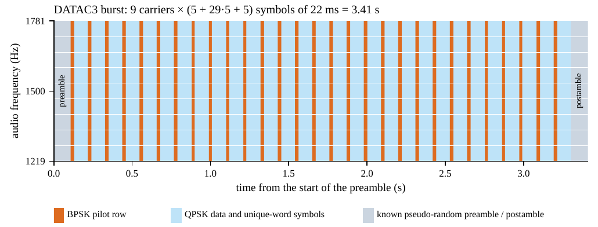
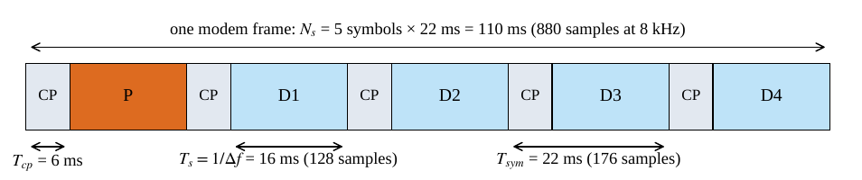
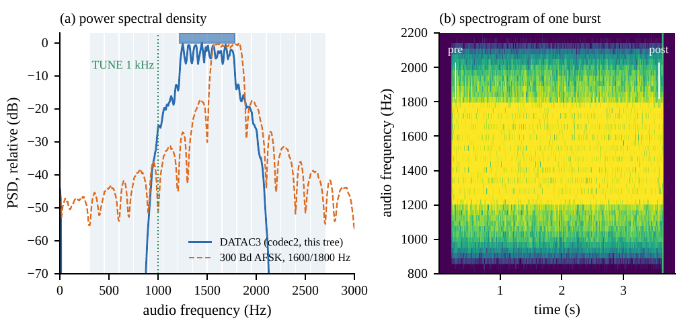
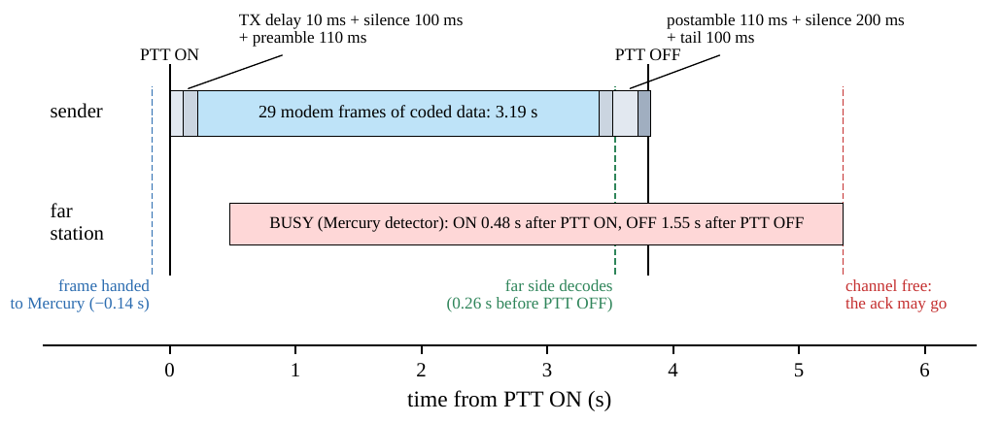
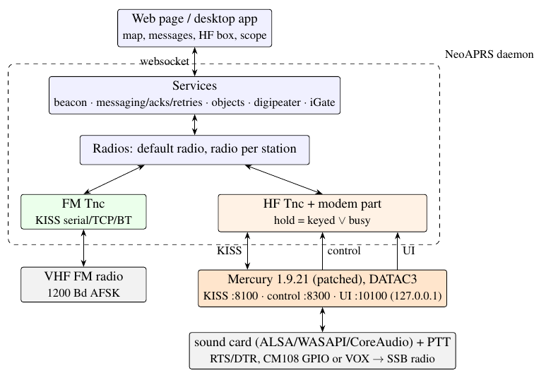
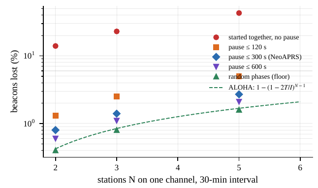
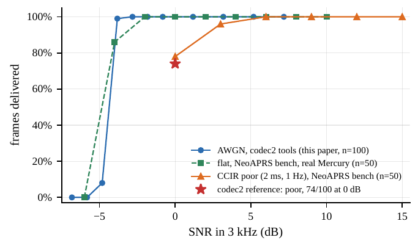

Technical note · version 1.0 · 4 November 2026
APRS over HF with the Mercury Modem
The DATAC3 OFDM waveform, its use as the HF radio of NeoAPRS, and the channel-access rules of a shared APRS frequency
Abstract. APRS has been sent over HF since the early 1990s, almost entirely as uncoded 300-baud AFSK packet. That waveform has no error correction and symbols of 3.3 ms, so a single bit error, a few milliseconds of multipath delay spread or a short fade loses the whole packet. NeoAPRS, an open-source APRS client, now has a second radio for HF. It sends ordinary AX.25 APRS frames through Mercury, the HF modem of Rhizomatica’s HERMES project, in the FreeDV/codec2 data mode DATAC3. DATAC3 is coherent OFDM: 9 QPSK carriers 62.5 Hz apart in 562 Hz of audio, a 6 ms cyclic prefix, one row of BPSK pilots in every five symbols, and a rate-1/2 LDPC code of length 2048. Each burst carries 126 bytes in 3.19 s, a payload rate of 316 bit/s (321 bit/s counting the CRC). This note explains how the waveform is built and decoded, the bit and time budget of one frame, and how NeoAPRS fits APRS onto it. That includes a 123-byte frame limit, carrier sense built from the modem’s own spectrum, ack and retry timing measured on a simulated channel, and a beacon interval with a random pause chosen by Monte Carlo simulation. We rebuilt the codec2 tools of the pinned Mercury source and reproduced the AWGN decoding cliff at −4 to −5 dB SNR in 3 kHz. The note ends with the first exchange of APRS messages over Mercury between two stations on the air (4 November 2026). That test ran on 6 m over 40.8 km, and messages sent with 1 W were decoded at a reported SNR of −3 dB.
Status of the results. The waveform figures are properties of the source code (Mercury 1.9.21, commit edca701) and were checked by rebuilding the codec2 tools of that tree. The figures for channel access, acks and beacons were measured on a simulated channel: real Mercury processes connected through a software HF channel with AWGN and Watterson fading, with no radio. The on-air result is a single 20-minute test on 6 m. It shows that the integration works end to end, but it does not characterise ionospheric (skywave) propagation. The meeting frequencies are proposals until stations have tried them on the air. This note will be revised as on-air data from 40 m and 20 m arrive (see the version history at the end).
Contents
- 1 Introduction
- 2 APRS and AX.25 in brief
- 2.1 The frame
- 2.2 Messages and acknowledgements
- 2.3 Why the VHF rules do not carry over
- 3 The HF channel and APRS on it
- 3.1 Multipath, Doppler and the Watterson model
- 3.2 300-baud AFSK
- 3.3 Earlier improvements
- 4 The DATAC3 waveform
- 4.1 Parameters
- 4.2 The time-frequency grid
- 4.3 Bit budget
- 4.4 The transmitter
- 4.5 The receiver
- 4.6 Why these numbers suit the HF channel
- 4.7 The burst on the air
- 4.8 DATAC3 among Mercury’s modes
- 5 Mercury’s broadcast plane as NeoAPRS uses it
- 5.1 Interfaces
- 5.2 The frame limit
- 5.3 Building and hardening
- 6 Integration into NeoAPRS
- 6.1 Architecture
- 6.2 Rules per radio
- 6.3 Frame size
- 6.4 Channel access: listen before talk
- 6.5 Acks and retries
- 6.6 Beacons
- 6.7 VOX keying and the lead-in tone
- 6.8 The radio interface
- 7 Measurements
- 7.1 The simulated channel
- 7.2 Decoding against SNR
- 7.3 Summary of measured quantities
- 8 The first test on the air
- 9 Discussion
- 9.1 DATAC3 against the HF APRS waveforms in use
- 9.2 Capacity of a shared frequency
- 9.3 Design choices that could be revisited
- 10 Limitations and open questions
- 11 Reproducing the numbers
- References
1 Introduction
The Automatic Packet Reporting System (APRS) is a tactical, connectionless data network of amateur radio [1]. A station broadcasts short AX.25 frames in unnumbered information (UI) form [2]: its position, a status text, weather readings, objects it places on the map, and short messages to other stations, which the addressee acknowledges. On VHF the network runs at 1200 baud (Bell 202 AFSK on an FM carrier), and digipeaters and Internet gateways (iGates) give it regional and worldwide reach.
HF behaves differently. A single frequency is shared by stations hundreds to thousands of kilometres apart. Signals arrive through several ionospheric paths with delays of milliseconds and Doppler spreads up to about a hertz. The noise floor changes with the hour and the season, and the usable signal is often at or below the noise in a 3 kHz bandwidth. The APRS world kept the HF waveform of the 1980s packet network, 300-baud AFSK with a 200 Hz shift and no error correction [5, 6]. Proprietary alternatives such as SCS Robust Packet Radio (RPR) [8] and experiments with PSK63 [7] improved robustness, but none replaced it.
The FreeDV project’s codec2 library contains a family of OFDM data modes, designed for multipath HF channels and coded with long LDPC codes [11]. Rhizomatica’s Mercury modem builds on them and adds its own modes. It has an ARQ link layer, a broadcast plane and a VARA-style TCP interface [12]. The broadcast plane is what APRS needs. It sends unconnected frames, one modem frame each, with no acknowledgement, to every station on the same mode and frequency, and it takes those frames over KISS on a TCP port, which is how APRS software already talks to a TNC.
NeoAPRS [13] is an open-source APRS client for Windows, macOS, Linux and the Raspberry Pi. Since version 0.16 it can run an HF radio beside its usual VHF TNC. That radio is a Mercury process which NeoAPRS builds, ships, starts and supervises. This note documents the result for telecommunication engineers and researchers.
- Section 2 summarises the APRS/AX.25 stack, and Section 3 the HF channel and the history of APRS on it.
- Section 4 describes the DATAC3 waveform in detail: the time-frequency grid, the coding, the burst structure, the transmitter and receiver processing, and the bit and time budgets.
- Section 5 describes Mercury’s broadcast plane as NeoAPRS uses it.
- Section 6 describes the integration: frame size, carrier sense, acks, retries, beaconing and the radio interface.
- Section 7 gives the measurements, Section 8 the first on-air test, and Sections 9 and 10 the discussion and limitations.
2 APRS and AX.25 in brief
2.1 The frame
An APRS packet is an AX.25 UI frame [2]. It has a destination address (7 bytes; in APRS this field carries a tocall that identifies the software), the source address (7 bytes), and up to eight digipeater addresses of 7 bytes each (the path). These are followed by the control field 0x03, the protocol identifier 0xF0, and the information field of up to 256 bytes, whose first character gives the APRS data type [1]. On the air, HDLC framing adds the flags, the 16-bit frame check sequence (FCS) and bit stuffing. Between a host and a TNC, the KISS protocol [3] carries the frame without flags or FCS, as FEND, command, data, FEND with FEND and FESC escaped.
2.2 Messages and acknowledgements
An APRS message has the information field :ADDRESSEE:text{MM, where the addressee is padded to nine characters, the text is at most 67 characters, and MM is a message number of one to five characters. The addressee answers :SENDER :ackMM. The sender repeats the message until the ack arrives or its retries run out. Reply-acks ({MM}AA), defined in a later addendum to the specification, let an answer carry the ack of the message it answers. NeoAPRS sends a message to a station up to four times, at 0, 32, 64 and 128 s, and waits 240 s after the last attempt before declaring it failed. The first wait is 32 s rather than 30 s because VHF digipeaters drop duplicates for 30 s.
2.3 Why the VHF rules do not carry over
On VHF the path (WIDE1-1,WIDE2-1), the digipeaters, SmartBeaconing for moving stations [4] and a beacon every 10 to 30 minutes are matched to a channel that is local, fast (a 100-byte frame takes about 0.7 s at 1200 baud) and repeated. On HF every station on the frequency hears every frame directly, if it hears it at all. A frame takes seconds. A digipeater would only send the same frame again on a channel that every station already shares. Section 6.2 shows how NeoAPRS turns this into explicit rules for each kind of radio.
3 The HF channel and APRS on it
3.1 Multipath, Doppler and the Watterson model
An HF skywave signal usually arrives over two or more paths, for example one-hop and two-hop, or the ordinary and extraordinary magneto-ionic modes. Each path is delayed differently and fades independently. The standard narrowband model is that of Watterson, Juroshek and Bensema [15]. Each path is a tap whose gain is a complex Gaussian process with a Gaussian Doppler spectrum. The model is characterised by the differential delay τ and the Doppler spread 2σf . ITU-R F.1487 [16] and the older CCIR channel-simulator recommendation define the test channels used throughout this note:
The CCIR test channels (two equal paths).
| channel | differential delay τ | Doppler spread |
|---|---|---|
| CCIR good | 0.5 ms | 0.1 Hz |
| CCIR moderate | 1 ms | 0.5 Hz |
| CCIR poor (codec2 “MPP”) | 2 ms | 1 Hz |
| flutter (CCIR only) | 0.5 ms | 10 Hz |
Two equal paths τ apart give a frequency response with notches every 1/τ: 500 Hz apart for the poor channel. A signal about 500 Hz wide therefore always has some carriers in a fade and some out of it. A code that spreads each word across all carriers can exploit this frequency diversity. A Doppler spread of 1 Hz sets the coherence time to the order of 1/(2πσf) ≈ 0.3 s, so the channel phase must be tracked many times per second.
3.2 300-baud AFSK
The HF APRS waveform in use today is the 300-baud, 200 Hz-shift AFSK of the early HF packet networks, sent on an SSB transmitter. The 30 m net is on 10.1476 MHz USB with tones of 1600 and 1800 Hz, and the convention of the 1990s gave it as 10.151 MHz LSB [5, 6]. Its weaknesses are clear from the numbers:
- Inter-symbol interference. A symbol lasts 1/300 = 3.33 ms. On the poor channel the second path is delayed by 2 ms, 60 % of a symbol, and there is no guard interval or equaliser to absorb it.
- No forward error correction. AX.25 detects errors with its FCS but cannot correct them. One wrong bit in a frame of about 800 bits loses the frame.
- Required SNR. Even in pure AWGN, ideal orthogonal non-coherent BFSK delivers a 100-byte frame (about 830 bits) 90 % of the time only at Eb/N0 ≈ 12.2 dB. Since SNR3k = Eb/N0 + 10 log10(Rb/3000), that is ≈ +2.2 dB SNR in 3 kHz. A 200 Hz shift at 300 baud (modulation index 0.67) and a discriminator detector do worse than this bound.
3.3 Earlier improvements
SCS’s Robust Packet Radio (RPR) replaced the waveform with pulse-shaped OFDM: 8 carriers 60 Hz apart at 50 baud, DBPSK or DQPSK, a convolutional code of rate 1/2 or 3/4, and 200 or 600 bit/s net in about 500 Hz [8, 10]. The vendor gives a typical required SNR of 7 to 10 dB on an AWGN channel in 3 kHz [8]. RPR is used for APRS on 10.1473 MHz and elsewhere [9], but it runs only on SCS hardware. Other experiments, such as APRS over PSK63, stayed niche [7]. DATAC3 belongs to the same design family as RPR (coherent multicarrier, about 500 Hz) but uses a modern long LDPC code and pilot-aided coherent detection. It is open source, and it runs on any computer with a sound card.
4 The DATAC3 waveform
DATAC3 is one of the OFDM [19] raw-data modes of codec2 [11], designed by David Rowe and contributors as the “forward link data, low SNR” mode. Mercury uses the stock definition. All the figures below are taken from modem/freedv/, ofdm_mode.cofdm.c and H_1024_2048_4f.h of the Mercury 1.9.21 tree [12], which is the source NeoAPRS builds.
4.1 Parameters
Table 1 lists the parameters of the mode as the source defines them, and the quantities that follow from them. The design is a compromise between three properties of the HF channel: its delay spread, its Doppler spread and its low SNR. Section 4.6 examines how each parameter answers one of them.
Table 1. DATAC3 parameters as defined in ofdm_mode.c (Mercury 1.9.21), with the derived quantities.
| symbol | quantity | value | note |
|---|---|---|---|
| fs | sample rate | 8000 Hz | audio, real |
| fc | centre frequency | 1500 Hz | every Mercury mode is centred here |
| Nc | carriers | 9 | edge_pilots = 0: no extra pilot carriers |
| Ts | useful symbol | 16 ms | M = 128 samples |
| Δf = 1/Ts | carrier spacing | 62.5 Hz | orthogonal spacing |
| Tcp | cyclic prefix | 6 ms | Ncp = 48 samples |
| Tsym | symbol period | 22 ms | 176 samples; 45.45 baud per carrier |
| B | occupied bandwidth | NcΔf = 562.5 Hz | 1219–1781 Hz audio |
| Ns | symbols per modem frame | 5 | 1 pilot row + 4 data rows; 110 ms |
| Np | modem frames per packet | 29 | 145 symbols, 3.19 s |
| — | modulation | Gray-coded QPSK | 2 bits/symbol; pilots BPSK |
| — | unique word | 40 bits | frame-boundary check, at most 9 bit errors |
| — | FEC | LDPC (2048, 1024) | H_1024_2048_4f, rate 1/2, ≤100 iterations |
| — | payload | 126 bytes + CRC-16 | 128 bytes = 1024 information bits |
| — | pre/postamble | 1 modem frame each | 110 ms, known pseudo-random QPSK + pilots |
| — | acquisition range | ±50 Hz | joint timing/frequency search |
4.2 The time-frequency grid
Figure 1 shows one burst on the time-frequency plane and Figure 2 one modem frame. Every OFDM symbol is a 128-point inverse DFT of the carrier values, preceded by a 48-sample cyclic prefix copied from its end. The first symbol of each modem frame is a row of known BPSK pilots. The next four symbols carry Gray-coded QPSK. The 29 modem frames are framed by a preamble and a postamble. Each is one modem frame of known pseudo-random QPSK symbols with its pilot row. These two sequences are different (seeds 2 and 3 in ofdm_generate_preamble), so the receiver can tell the start of a burst from its end.


4.3 Bit budget
The coded bits of one packet fill the data symbols exactly:
Np (Ns − 1) Nc b = 29 × 4 × 9 × 2 = 2088 bits = 2048 (LDPC codeword) + 40 (unique word)(1)
The LDPC codeword holds 1024 information bits: 128 bytes, of which 126 are payload and 2 a CRC-16. Over the 3.19 s of the 29 modem frames (without the pre/postamble) this gives the rates in Table 2.
Table 2. The rates of DATAC3, and what remains for APRS in NeoAPRS. “Air time” is PTT ON to PTT OFF (Section 4.7).
| quantity | value | derivation |
|---|---|---|
| channel symbol rate (all carriers) | 409 sym/s | 9 × 45.45 |
| gross bit rate on data symbols | 654.5 bit/s | 2088 bits / 3.19 s |
| LDPC information rate | 321 bit/s | 1024 bits / 3.19 s (codec2’s figure) |
| payload rate | 316 bit/s | 126 bytes / 3.19 s |
| spectral efficiency (information) | 0.57 bit/s/Hz | 321 / 562.5 |
| payload per frame available to APRS | 123 bytes | 126 − 3 bytes of Mercury framing |
| APRS rate per air time | 259 bit/s | 123 bytes / 3.80 s |
| a typical 80-byte position report | 168 bit/s | 80 bytes / 3.80 s (a frame always has full length) |
4.4 The transmitter
The modulator maps bits to QPSK symbols, inserts the pilot rows, takes the inverse DFT of each symbol, adds the cyclic prefix and up-converts to 1500 Hz. Two steps then shape the signal for an SSB transmitter. The first is a Hilbert clipper, which limits the magnitude of the complex signal and lowers the peak-to-average power ratio (PAPR). The second is a transmit band-pass filter that removes the spectral regrowth the clipper causes. The sequence in the code is clip, filter, scale and clip again. The preamble and postamble are generated without clipping or filtering, so that the receiver correlates against exactly the waveform that was sent. We measured a real burst from the tree’s freedv_data_raw_tx: 27 280 active samples (3.41 s), a peak of 15 717 and an RMS of 7 296 on the 16-bit scale, a crest factor of 6.7 dB. NeoAPRS measured the same on Mercury’s output (peak −6.4 dBFS, RMS −13.1 dBFS). An unclipped multicarrier signal of this kind typically has a PAPR near 10 dB. The clipper’s 3 dB or so of headroom therefore turns almost directly into average transmitter power, which matters at the low SNRs this mode is designed for.
Figure 3 shows the measured spectrum and spectrogram. The main lobe fills 1219–1781 Hz. Shoulders left by the clipper lie about 15–25 dB below the band within some 200 Hz of its edges, and the transmit filter takes the spectrum more than 50 dB down below 900 Hz and above 2100 Hz. For comparison, the figure includes a simulated 300-baud AFSK signal with continuous phase and 1600/1800 Hz tones: its energy is spread much more widely with slowly decaying sidelobes, and none of it is coded.

4.5 The receiver
The demodulator runs in codec2’s burst mode with one packet per burst, and works in four stages:
- Acquisition. The receiver correlates the incoming audio with the known preamble and, separately, with the known postamble. It does this over a grid of frequency hypotheses within ±50 Hz and over all timing offsets, using an FFT-accelerated joint timing/frequency search (Mercury’s addition to
ofdm.c). The search is then refined on a finer grid. A burst is declared when the normalised correlation peak exceedstiming_mx_thresh = 0.10. If the postamble correlates better than the preamble, the receiver rewinds its buffer by one packet from the postamble and demodulates the burst forwards from its start. This gives it a second chance to find a burst whose preamble was hit by a fade or cut by a slow VOX. How much that helps depends on the SNR in ways the VOX measurement (Section 6.7) did not resolve. - Channel estimation. Each received symbol is converted back to the frequency domain at a timing point kept inside the cyclic prefix. For each carrier separately, the phase and amplitude are estimated from the two pilot rows that bracket the modem frame (its own and the next one’s) and removed from its four data symbols. This is codec2’s high-bandwidth estimator, which the data modes keep throughout: it does not average across neighbouring carriers or further pilot rows, so it can follow fast fading at some cost in noise. The frequency offset is tracked from the pilots.
- Soft decisions. The equalised QPSK symbols become log-likelihood ratios. The unique word is checked to confirm the frame boundary.
- Decoding. A sum-product decoder for the low-density parity-check code [20] runs at most 100 iterations on the 2048 LLRs. The decoded 128 bytes are kept only if the CRC-16 over the 126-byte payload is correct. Mercury 1.9.21 also enables a Chase-combining fallback for its data modes by default. When a frame fails, the LLRs kept from earlier failed frames are added and the decode is tried again, still checked by the CRC. The fallback is meant for ARQ retransmissions of the same frame. On the broadcast plane consecutive frames differ, so at most it adds a retry, and its effect there has not been measured.
4.6 Why these numbers suit the HF channel
- Cyclic prefix against delay spread. Tcp = 6 ms is longer than the 2 ms of the poor channel and the 4 ms of the “disturbed” codec2 channel. A path delayed by less than the prefix therefore causes no inter-symbol interference, only a different gain per carrier, which the pilots measure. The cost is 10 log10(22/16) = 1.4 dB of energy.
- Carrier spacing against Doppler. With Δf = 62.5 Hz, a Doppler spread of 1 Hz is 1.6 % of the spacing, so inter-carrier interference is negligible. The 10 Hz of the flutter channel (16 %) is not.
- Pilot spacing against fading rate. One pilot row every 110 ms samples each carrier’s channel at 9.1 Hz. That is well above the Nyquist rate of a 1 Hz Doppler spread, and below it for flutter. The pilots cost 10 log10(5/4) = 1.0 dB.
- One codeword over all carriers and the whole burst. The 2048 coded bits occupy all 9 carriers for 3.19 s, and codec2’s golden-prime interleaver (
gp_interleave_comp) spreads the 1024 coded QPSK symbols over the whole packet before the pilots are inserted. One codeword thus spans about one notch spacing of the poor channel in frequency and several fade periods in time. This diversity is why DATAC3 still delivers about three frames in four at 0 dB on the poor channel [11]. - Frequency offset. The acquisition range of ±50 Hz covers the combined error of both radios’ dials and oscillators. That is 7 ppm at 7 MHz, 3.5 ppm at 14 MHz and 1 ppm at 50 MHz. Our test (Section 7.2) found delivery from −55 to +55 Hz and none at +60 or +80 Hz.
The gap to capacity. At a spectral efficiency of η = 0.57 bit/s/Hz, Shannon’s bound requires Eb/N0 ≥ (2η − 1)/η = −0.7 dB. DATAC3’s AWGN cliff, at about −4.0 dB SNR in 3 kHz inside the burst (Section 7.2), corresponds to Eb/N0 ≈ −4.0 + 10 log10(3000/321) ≈ 5.7 dB per information bit. The gap of about 6 dB is accounted for, to the first order, by the cyclic prefix (1.4 dB), the pilots (1.0 dB), the pre/postamble and unique word, the loss of a short (n = 2048) code against capacity, and channel-estimation and implementation losses. Mercury’s own documentation reaches the same kind of budget for its DATAC16 mode [12]. In return, the waveform has a 6-ms guard against multipath and a reference for the channel every 110 ms, which an AWGN-optimal design would not have.
4.7 The burst on the air
Mercury’s transmitter keys the radio and then plays, in order (modem/modem.c): 10 ms of TX delay, 100 ms of silence, the 110-ms preamble, 3.19 s of data, the 110-ms postamble, 200 ms of silence, and a further 100 ms before PTT is released. By the code that is 3.82 s. NeoAPRS measured 3.80 s from PTT ON to PTT OFF over six frames. Mercury’s MODES.md speaks of a preamble of about 0.66 s. That is close to the whole non-data overhead of the burst by the code (0.63 s). The preamble itself is 110 ms. The burst is always of full length: a short APRS packet is padded to 126 bytes. Figure 4 adds what the far station sees. The frame is decoded 0.26 s before the sender releases PTT, while the 200 ms of silence and the 100 ms tail are still keyed. This detail shapes the timing of acks (Section 6.5).

4.8 DATAC3 among Mercury’s modes
Mercury has thirteen modes, from a 32-tone MFSK floor (98 bytes in about 13.5 s) to QAM16C2 (1213 bytes in 3.2 s in 2.1 kHz). Its ARQ link moves between them as the channel changes [12]. The broadcast plane has no return path, so it cannot adapt: every station must be on the same mode, and nothing on the air says which mode a station is using. NeoAPRS therefore fixes one mode. DATAC3 is the narrowest mode whose frame carries a whole APRS packet. DATAC4 (250 Hz) carries 54 bytes, DATAC15 30 bytes and the MFSK modes 98 bytes (51, 27 and 95 after Mercury’s 3-byte framing), and none of these holds a full APRS message with its addresses.
5 Mercury’s broadcast plane as NeoAPRS uses it
5.1 Interfaces
A Mercury process offers three TCP interfaces, which NeoAPRS uses as follows:
- Broadcast port (8100 by default): KISS over TCP. NeoAPRS writes each AX.25 frame as a KISS data frame (command
0x00). Mercury puts a 1-byte header and a 2-byte length in front of it, pads it to 126 bytes and appends the CRC. Received frames come back as KISS frames. Mercury accepts one broadcast client at a time. - Control port (8300): CR-terminated text lines in the style of VARA. NeoAPRS reads
PTT ON/OFF,, SN (the SNR estimate of the last frame decoded) andBUSY ON/OFFIAMALIVE, and writes onlyTUNE levelandTUNE OFF. The ARQ commands (MYCALL, LISTEN, CONNECT) are not used. - UI websocket (broadcast port + 2000): NeoAPRS reads the receive spectrum twenty times a second and the transmit peak, and sets the transmit gain while the modem runs.
The broadcast plane does no carrier sense. Two stations that key together lose both frames. Mercury has a channel-busy detector (modem/channel_busy.c), off by default, that reports BUSY ON/OFF on the control port. NeoAPRS turns it on and builds its channel access on top of it (Section 6.4).
5.2 The frame limit
The 3 bytes of Mercury’s framing leave 123 of the 126 for the AX.25 frame. If a longer KISS payload is sent, Mercury cuts it to fit and logs a warning, but the client is not told: on the bench a 140-byte frame arrived at the far station as 123 bytes. NeoAPRS therefore enforces the limit before the frame reaches Mercury (Section 6.3). Mercury’s CRC-16 takes the place of the AX.25 FCS, and the LDPC code removes the need for bit stuffing, so the 123 bytes are all frame content.
5.3 Building and hardening
NeoAPRS does not use a Mercury already installed on the system. It builds Mercury from the pinned source (a commit and a SHA-256) for Linux, macOS and Windows, and ships it inside every package. That way the program on the operator’s computer is the one the test suite ran against. Four small patches and a stub are applied:
- Loopback. Mercury 1.9.21 binds its ports to all interfaces without any authentication. Any host on the LAN could then key the transmitter with TUNE or a KISS frame. The patch binds every port to 127.0.0.1, and the release builds check the socket table.
- Lead-in. An optional tone ahead of the preamble for radios keyed by VOX (Section 6.7).
- Flush. A flush of stderr after each log line. On Windows the C runtime buffers a pipe, and an error opening the sound card reached NeoAPRS 20 minutes late on a test station.
- DirectSound. Delayed loading of DirectSound, so that the modem starts on the “N” editions of Windows.
- PulseAudio. A PulseAudio stub, so that the Linux build needs only ALSA.
6 Integration into NeoAPRS
6.1 Architecture
Figure 5 shows the parts. The NeoAPRS daemon (Python, asyncio) owns a Radios object with up to two radios. The FM radio is any KISS TNC. The HF radio is a KISS-over-TCP connection to the broadcast port of a Mercury process that the daemon starts. Its control and UI connections give it a hold state, and the services consult hold before every frame. Every received packet is tagged with the radio it came on, and both radios feed one map, one station book and one message list. The services (beacon, messaging and acks, objects, bulletins, the digipeater and the receive-only iGate) never ask which radio they have. They read a RadioRules value (Table 3).

6.2 Rules per radio
Table 3. The RadioRules of the two kinds of radio (neoaprs/radiorules.py).
| rule | FM (VHF) | HF (Mercury) | reason on HF |
|---|---|---|---|
| path (digipeaters) | as set | none, ever | every station hears every frame directly; a path costs 7 bytes per hop of 123 |
| fill-in digipeater | allowed | never | a repeat refills a channel that every station already hears |
| SmartBeaconing | yes | no | a report every few tens of seconds while turning would take the channel from everyone |
| minimum beacon interval | 20 min | 30 min | a 3.8-s frame on a shared channel; HF APRS practice of 10–30 min |
| random beacon pause | 0 | 0–300 s | keeps fixed stations with stable clocks apart (Section 6.6) |
| random retry pause | 0 | 0–20 s | two colliding stations would otherwise retry together |
| maximum frame | AX.25 limit | 123 bytes | what DATAC3 carries whole |
6.3 Frame size
With no path, an APRS frame is 16 bytes of addresses, control and PID, plus the information field. A message with the full 67 characters and a five-character number is 16 + 1 + 9 + 1 + 67 + 1 + 5 = 100 bytes. An uncompressed position with the maximum 43-character comment is 16 + 20 + 43 = 79 bytes. Both fit in 123. The limit is enforced at three levels:
- messaging refuses a message that would not fit, allowing for the two bytes a reply-ack may add later;
- the beacon and the object sender shorten a comment to fit, but never the position report itself;
- the Tnc refuses any longer frame as the last guard.
6.4 Channel access: listen before talk
NeoAPRS holds every frame of its own while either of two conditions is true. The first is that the radio is keyed: from PTT ON to PTT OFF, so that its own frames go one at a time. That hold is believed for at most 12.6 s (2 × 3.8 s + 5 s, about three frames’ worth), so a lost control line cannot stall the radio. The second is that the channel is busy. That hold is believed for at most 20 s, five frames and a margin, so that a detector that misreads the noise cannot strand traffic. This is carrier-sense multiple access (CSMA) [18] in its simplest form. The interesting part is the carrier sense.
Mercury’s detector. Every 50 ms Mercury computes a spectrum and the power in bands of about 150 Hz from 300 to 2700 Hz. It tracks a noise floor (the lower-quartile band, which falls quickly and rises slowly) and declares BUSY when the loudest band is busy_threshold_db above the floor for 300 ms. It declares CLEAR when that band has been 3 dB lower for 1.5 s. NeoAPRS measured seven real Mercury receivers with thresholds from 10 to 24 dB on one simulated channel (Table 4). A DATAC3 frame at SNR ρ (in 3 kHz) stands on average about 10 log10(1 + 5.3ρ) over the noise of its 150-Hz bands, because each band holds 1/20 of the 3 kHz noise but about 1/3.75 of the signal: 13.5 dB at 6 dB SNR and 8 dB at 0 dB. The loudest band fluctuates above that average, which is why frames at 6 dB are still seen at 14 dB. In the measurement, each 2 dB of threshold cost about 3 dB of sensitivity. A threshold of 14 dB is the highest that still sees a frame at 6 dB SNR and that stays quiet on a carrier up to 12 dB over its band and on a 10 dB step in the noise. Mercury’s default of 10 dB stays busy for the whole two minutes after such a step. Only the 24 dB threshold ignores a 20 dB step, and it sees frames only at 20 dB SNR.
Table 4. Mercury’s own busy detector at seven thresholds (real Mercury, simulated channel, 2 November 2026). Top: frames seen of 6 at each SNR. Bottom: seconds busy with no frame on the channel.
| 10 dB | 12 dB | 14 dB | 16 dB | 18 dB | 20 dB | 24 dB | |
|---|---|---|---|---|---|---|---|
| frame at 0 dB SNR | 6 | 0 | 0 | 0 | 0 | 0 | 0 |
| frame at 3 dB | 6 | 6 | 0 | 0 | 0 | 0 | 0 |
| frame at 6 dB | 6 | 6 | 6 | 0 | 0 | 0 | 0 |
| frame at 10 dB | 5 | 6 | 6 | 6 | 6 | 1 | 0 |
| carriers 12 dB over their band (of 60 s) | 60 | 60 | 0 | 0 | 0 | 0 | 0 |
| step of 10 dB in the noise (of 120 s) | 119 | 69 | 0 | 0 | 0 | 0 | 0 |
| step of 20 dB in the noise (of 120 s) | 120 | 120 | 108 | 87 | 66 | 54 | 0 |
NeoAPRS’s occupancy detector. A fixed threshold over a slowly tracked floor answers the wrong question. It responds to a level, whereas the station wants to know whether another frame is on the air. NeoAPRS computes the same bands from the spectrum it reads over the UI interface and asks whether there is a signal as wide as a frame (neoaprs/channelbusy.py). The procedure is:
- average each band in power over 0.25 s;
- flatten each band against its own slow floor (falling in 2 s, rising in 17 s, frozen while busy), so that the slopes of a receiver’s IF filter do not look like a signal;
- take the 25 % quantile of the flattened bands at this moment as the reference, so that a rise of the noise across the whole passband (a step, a drift, static) moves the reference with the bands;
- mark a band as lifted when it stands 4 dB over the reference (and keep it lifted down to 2 dB);
- declare BUSY when three adjacent bands (450 Hz) are lifted for 0.3 s, and CLEAR 0.8 s after they are not.
A carrier, narrower than one band, is a run of one band. A DATAC3 frame (562 Hz) is a run of three or four. The detector stops while the station transmits and for 0.4 s after, because the spectrum then shows its own signal. It costs about 0.05 ms per spectrum. When the spectrum is not available, Mercury’s 14 dB detector takes over.
On 20 simulated channels (white noise, a receiver’s filter shape, carriers, steps, drifts, static bursts, wandering noise, a voice-like signal, a narrow 500–2300 Hz filter, each also with poor fading) the occupancy detector compares with Mercury’s as follows:
- it saw 144 of 180 frames at 3 dB SNR and below, against 42 for Mercury’s detector (36 of them on channels where Mercury’s detector was busy all the time anyway);
- it stayed quiet with no frame on every channel except the voice-like signal, which both detectors hold, correctly;
- its mean delay from PTT ON to BUSY was 0.7 s, against 0.5 s for Mercury’s;
- with nothing else on the channel, both released about 1.5 s after PTT OFF.
Signals narrower than 450 Hz (RTTY, PSK31, FT8) are not seen, and a broadcast carrier wider than a frame holds the radio until the 20-s cap.
6.5 Acks and retries
The timeline of Figure 4 shows the problem. The addressee decodes the message 0.26 s before the sender’s PTT OFF, and its busy detector stays BUSY until 1.55 s after PTT OFF. An ack made at once would be sent over the sender’s tail. On the bench, every ack of the first test round was lost this way. NeoAPRS therefore queues an ack while the radio is held and sends it at the first tick of the messaging service (once a second) that finds the radio free, waiting at most 60 s. The message and ack sequence is then:
0.14 (hand-in) + 3.54 (to decode) + ≈1.8 (to BUSY OFF) + 0–1 (tick) + 0.14 + 3.54 (the ack) ≈ 9.2–10.2 s
NeoAPRS measured 9.6–10.6 s (median 10.2 s, 20 of 20 messages) on a flat channel. On the poor fading channel at 6 dB it measured 9.2–11.2 s, with 18 of 20 acked on the first attempt and the other two on a retry. The slowest first-attempt ack came at 35 % of the first 32-s retry wait. The FM schedule (0, 32, 64, 128 s, then 240 s) therefore works on HF unchanged, apart from three adjustments:
- a wait that runs while the radio is held is extended by the time it was held;
- two attempts of one’s own are always at least 10 s apart, so the next attempt never goes before the last one’s ack could have arrived;
- on HF each retry adds a random pause of 0–20 s. Without it, two stations that collided retried 32 and 64 s later to the second, and collided again. This was observed in traffic between OH2GBA and OH2GAX and fixed in NeoAPRS 0.17.3.
6.6 Beacons
With an interval I, a frame time T = 3.8 s and N stations whose phases are independent and uniformly random, a given beacon collides with probability
Ploss = 1 − (1 − 2T/I)N−1(2)
the vulnerable period of pure ALOHA [17]. For I = 30 min this is 0.42 %, 0.84 % and 1.7 % for 2, 3 and 5 stations. Fixed stations, however, have stable clocks. If they start their intervals within a minute of each other, for example after a power cut, they stay in step. Those whose phases fall within a frame time of each other then collide on every interval. NeoAPRS’s Monte Carlo simulation (20 000 station-hours per point) shows how large the effect is and how much a random pause after each interval helps (Figure 6). A pause of up to 300 s brings stations that started together to within a point of the random-phase floor of Eq. (2). A pause of 120 s leaves about three times the floor, and 600 s gains little more. The simulation reproduces Eq. (2) for random phases (0.4, 0.8 and 1.6 %), which validates it. A lost beacon is made up by the next one.

scripts/mercury-measure beacons). The markers are stations that started together with different random pauses. The dashed line is Eq. (2) for random phases. Carrier sense, which the model leaves out, reduces the losses further between stations that hear each other.6.7 VOX keying and the lead-in tone
A radio keyed by its VOX starts to transmit only after its attack time, so it loses the first part of the burst. Mercury starts with 100 ms of silence, which a VOX does not hear, followed by the 110-ms preamble. NeoAPRS measured two real Mercury instances with the first N ms of each transmission muted, 20 frames per point. At 20 dB SNR the frames survived up to 60 ms of loss, began to fall at 80 ms (17 of 20), and were all lost at 100 ms. At 10 dB half were lost at 100 ms. At 3 dB nothing was lost up to 200 ms. Why a weak signal survives a lost preamble better than a strong one was not investigated. NeoAPRS’s patch plays 150 ms of a 1 kHz tone at the frame’s RMS level, with 5-ms ramps, just before the preamble. It is used only when the keying is VOX. With the tone, every point up to 200 ms of loss is as good as with no loss, at a cost of 4 % of the channel time for that station. The tone lies below the 1219–1781 Hz that the mode occupies.
6.8 The radio interface
The daemon proposes a sound card and a keying method, and the operator can change both. For the sound card it picks the one USB card that both records and plays and that names itself as a codec or a radio interface (an IC-7300’s USB Audio CODEC, a DigiRig’s C-Media chip), in preference to the computer’s own. On Linux the card is stored by its ALSA name rather than its number, which can change after a reboot. On Windows the two endpoints that Windows lists for one card are paired. For the keying it picks the RTS line of the one USB serial port of a radio or interface when the card is a USB one, and VOX otherwise. CM108 GPIO, RTS and DTR are also available.
The modem’s transmit gain is set in whole dB (±20 dB). At 0 dB a frame peaks at −6.4 dBFS. A 10-s TUNE tone (1 kHz, −15 dBFS plus the gain) lets the operator set the ALC and an antenna tuner. A 1-s keying test at −60 dBFS checks the PTT line without putting a signal on the air.
The SNR shown is Mercury’s SN estimate, calibrated per mode on a flat channel (DATAC3: 1.154x + 0.37 dB). It reads 1–2 dB below the true SNR between 0 and 10 dB, slightly above it near the cliff (−3.3 dB reported at a true −4 dB), and flattens at about 12 dB: −0.7 dB is reported at a true 0 dB, and 11.0 dB at a true 33 dB. A Dummy HF radio creates distant stations and plays the modem through the speakers, so the operator can try the HF radio without transmitting.
7 Measurements
7.1 The simulated channel
NeoAPRS’s test suite contains a software HF channel (tests/support/hfchannel.py). It connects real Mercury processes on one computer through Mercury’s fifo audio backend. Each station hears the sum of the others through a per-link gain, delay and fading process, plus noise. The SNR follows the definition of codec2’s ch tool: signal power against the noise power in 3 kHz, with the signal reference taken from the measured RMS of a DATAC3 frame. The fading is the two-path Watterson model of ITU-R F.1487, implemented as in Mercury’s own simulator, with the CCIR presets. Its tests check that the tap processes have unit power and a Gaussian autocorrelation, and that a steady two-path channel produces an exact echo.
7.2 Decoding against SNR
Figure 7 combines three data sets. The first is NeoAPRS’s runs with real Mercury, 50 frames per point, flat and CCIR poor. The second is codec2’s reference figure for the poor channel. The third is a run made for this note, which rebuilt freedv_data_raw_tx, freedv_data_raw_rx and ch from the codec2 sources of the Mercury 1.9.21 tree and sent 100 single-frame DATAC3 bursts per point through AWGN. The independent run reproduces the cliff that Mercury’s notes report [12]: 99 of 100 frames at −3.8 dB and 8 of 100 at −4.8 dB, against Mercury’s 140 of 149 and 6 of 143. On the poor channel the bench delivered 39 of 50 frames at 0 dB (78 %), in line with codec2’s 74 of 100, and all from 6 dB upwards. ch averages the signal power over the whole file, including the gaps between bursts. In our file 93.9 % of the samples are active, so the SNR inside the bursts is 0.27 dB higher than the figure shows and the cliff lies near −4.0 dB. The capture range was measured the same way at high SNR, 30 frames per offset: all delivered at −55, −45, 0, +25, +45, +50 and +55 Hz, and none at +60 and +80 Hz.

ch’s SNR). Green and orange: NeoAPRS’s bench with real Mercury processes on a flat and a CCIR-poor channel. Red star: codec2’s reference figure.7.3 Summary of measured quantities
Table 5 collects the constants NeoAPRS uses for the HF radio, with the source of each: the Mercury code, a measurement on the simulated channel, or a choice made from such a measurement.
Table 5. The constants NeoAPRS uses for the HF radio, and where each comes from (docs/mercury.md of NeoAPRS).
| quantity | value | source |
|---|---|---|
| air time per frame | 3.80 s | measured (six frames); 3.82 s by the code |
| hand-in to far decode | 3.68 s mean, 3.78 s max | measured |
| busy detector lag / hang | 0.48 s / 1.55 s | measured (Mercury’s, 14 dB) |
| message to ack (flat) | 9.6–10.6 s, median 10.2 s | measured, 20 messages |
| message to ack (poor, 6 dB) | 9.2–11.2 s, 18/20 first attempt | measured, 20 messages |
| beacon pause | 0–300 s | chosen from Monte Carlo (Fig. 6) |
| busy hold cap / keyed cap | 20 s / 12.6 s | chosen from the frame time |
| VOX lead-in | 150 ms | chosen; up to 200 ms of attack loss tolerated (measured) |
| capture range | −55 to +55 Hz | measured, this note (30 frames per point, Section 7.2) |
8 The first test on the air
On 4 November 2026 John, OH2GBA (the developer of NeoAPRS), and Otso, OH2GAX, were exchanging APRS messages on 2 m through the local digipeaters. When the VHF path at OH2GAX became unavailable, both stations moved to the NeoAPRS HF radio on 50.620 MHz USB in the 6 m band and continued the same conversation in the same program [14]. The stations were 40.8 km apart, and ten watts into a small balcony antenna was enough. To estimate the link margin, both stations lowered their power in steps while the messages continued: OH2GBA from 100 W through 50, 25 and 10 to 5 W, and OH2GAX from 45 W through 10 and 5 to 1 W.
Table 6. The first exchange of APRS traffic over Mercury between two stations on the air [14].
| distance, band | 40.8 km; 6 m, 50.620 MHz USB |
|---|---|
| modem, mode | Mercury in NeoAPRS, DATAC3 |
| duration | about 20 minutes |
| messages from OH2GBA | 9, all delivered: 7 on the first attempt, 1 on the second, 1 on the fourth (during the step to 5 W) |
| messages from OH2GAX | 12, all received on the first attempt |
| air time per message | about 4 s |
| OH2GAX’s signal at OH2GBA | 6–7 dB SNR at full power; −2 to −3 dB at 5 W and at 1 W |
| weakest frame decoded | −3 dB reported SNR, sent at 1 W |
| collisions | no frame lost to simultaneous transmission; every reply waited for the other’s frame to end |
What the test shows. The whole chain worked on the air between two independent installations: NeoAPRS, Mercury, the sound card, the PTT, the radio, the frame limit, the busy hold and the ack timing. Every message was delivered, and frames were decoded below the noise. The bench calibration of the estimator (a reported −3.3 dB at a true −4 dB, and −2.2 dB at a true −2 dB; Section 6.8) puts the true SNR of the weakest frames near −3 dB, only about 1 dB above the flat-channel cliff.
What it does not show. 50 MHz is a VHF frequency. Over 40.8 km the path was most probably ground wave and tropospheric, not ionospheric, so the test exercised neither HF multipath nor skywave fading. The reported SNR fell by about 9 dB while OH2GAX’s power fell by 16.5 dB (45 to 1 W), and was the same at 5 W and at 1 W. The test was not a calibrated link-budget measurement: the path may have changed, the estimator is biased, and the readings were taken by eye. The tests that come next are on 40 m (7.0541 MHz USB) and 20 m (14.1070 MHz USB) over skywave distances.
9 Discussion
9.1 DATAC3 against the HF APRS waveforms in use
Table 7 sets the three HF APRS waveforms side by side. The required SNRs come from different sources and definitions and are an order-of-magnitude comparison, not a measurement on one test bench. On AWGN alone, DATAC3 works about 6 dB below the ideal bound for 300-baud AFSK and about 11 dB below the vendor’s typical figure for RPR. On multipath the difference grows: DATAC3 is built for 2 ms of delay spread, while 300-baud AFSK loses 60 % of each symbol to it. The price is air time. A DATAC3 frame always occupies 3.8 s, whereas a 300-baud frame of 80 bytes takes about 2.6 s including a 0.3-s TX delay. That is why NeoAPRS limits the beacon rate and never digipeats.
Table 7. HF APRS waveforms compared. a Ideal orthogonal non-coherent BFSK on AWGN, 90 % delivery of a 100-byte frame (Section 3). b Vendor’s typical figure on AWGN [8]. c This note, 99 % delivery on AWGN.
| 300-baud AFSK | SCS Robust Packet | DATAC3 (Mercury) | |
|---|---|---|---|
| modulation | 2-FSK, 200 Hz shift | 8-carrier OFDM, DBPSK/DQPSK | 9-carrier OFDM, coherent QPSK |
| symbol / guard | 3.33 ms / none | 20 ms (50 baud), pulse-shaped | 16 ms + 6 ms cyclic prefix |
| bandwidth | ≈ 500 Hz | ≈ 500 Hz | 562 Hz |
| FEC | none (FCS detects errors only) | convolutional, r = 1/2 or 3/4 | LDPC (2048,1024) + CRC-16 |
| net rate | 300 bit/s (raw) | 200 / 600 bit/s | 316 bit/s (126 B per 3.19 s) |
| required SNR in 3 kHz | ≳ +2 dBa | 7 to 10 dBb | −3.8 dBc |
| implementations | any TNC, Direwolf | SCS hardware only | open source, any sound card |
9.2 Capacity of a shared frequency
With beacons only, N stations at a 30-minute interval offer a load of G = NT/I = N × 3.8/1800 Erlang: 0.1 for 50 stations. Pure ALOHA would lose 1 − e−2G(N−1)/N ≈ 19 % of beacons at that load. Carrier sense shortens the vulnerable period from 2T = 7.6 s to roughly twice the time a station needs to notice another one start (the 0.14-s hand-in plus the 0.5–0.7-s detection delay, 1.3–1.7 s in total). Among stations that hear each other, that is a reduction by a factor of four to six. On HF, however, stations often do not all hear each other. The skip zone creates hidden terminals, two stations 300 km either side of a third may be inaudible to each other, and carrier sense does not help with those. Between mutually hidden stations Eq. (2) applies unchanged: about 4 % of beacons lost with 10 stations, 8 % with 20 and 19 % with 50. The 30-minute floor, the random pause and the absence of digipeating keep a regional frequency with a few tens of stations in the range of a few per cent. Beyond that, the classic CSMA weakness would show.
9.3 Design choices that could be revisited
- One fixed mode. A broadcast plane cannot negotiate a mode, but a slower fringe mode for beacons only (for example DATAC4 with a compressed position, 54 bytes) could reach further. It would need a convention that every station also listens on it.
- Acks. An APRS ack without a path is 32 bytes, a quarter of the frame, yet it takes the full 3.8 s. A short mode would not help as it stands. DATAC0 carries 14 bytes, so it would need a compact ack encoding that no other APRS station understands, as well as a second mode on the frequency.
- Carrier-sense threshold. The occupancy detector’s numbers (4 dB, three bands, 0.8 s) were chosen on simulated noise. A recording of a real 40-m band would test them.
10 Limitations and open questions
- All timing, busy and ack figures come from a simulated channel: AWGN, Watterson fading and synthetic interference, not recorded band noise.
- The only on-air test ran on 6 m, one path, for 20 minutes. Skywave operation on 40 m and 20 m, with multipath, fading and hidden stations, has not been tested yet.
- The meeting frequencies (10.1462, 7.0541, 14.1070 and 50.620 MHz USB) are proposals within the IARU Region 1 digimode segments, to be confirmed by listening on each band.
- The frequency accuracy of ±50 Hz between two radios is easy for modern transceivers below 30 MHz, but at 50 MHz it requires about 1 ppm.
- Mercury’s SNR estimate is biased (low by 1–2 dB above 0 dB) and saturates at about 12 dB, so reported SNRs should be read as approximate.
- NeoAPRS’s HF radio does not interoperate with 300-baud AFSK or RPR stations. Mixed operation would need a gateway station.
11 Reproducing the numbers
The NeoAPRS measurements are made with scripts/mercury-measure in a development clone, once Mercury has been built with scripts/build-mercury --install:
scripts/mercury-measure frame: air time, delivery delay, busy lag and hang, audio level;scripts/mercury-measure decode --snr -6,-4,-2,0,2,4 --fading poor: delivery against SNR;scripts/mercury-measure acks --messages 20 --fading poor --snr-one 6: ack timing;scripts/mercury-measure vox --snr 10 --attack-ms 0,40,80,100,150,200 --leadin-ms 150: VOX loss and the lead-in;scripts/mercury-measure beacons: the beacon-collision Monte Carlo;scripts/mercury-measure busyandautobusy: the two busy detectors.
This note’s own AWGN run used the codec2 tools compiled from modem/freedv/ of the Mercury 1.9.21 tree:
freedv_data_raw_tx --testframes 100 --bursts 100 datac3 /dev/zero tf.raw
ch tf.raw - --No N | freedv_data_raw_rx --framesperburst 1 --testframes datac3 - /dev/nullwith N from −8 to −22 dB/Hz, and --freq for the capture range. The figures are made by figs.py, which is kept beside this document’s source.
Acknowledgements
NeoAPRS is developed and written by John, OH2GBA. Mercury is the work of Rhizomatica’s HERMES project, and the DATAC modes and their LDPC codes are the work of David Rowe and the FreeDV and codec2 contributors. The APRS symbols and device list are by OH7LZB.
References
- Bruninga, B. (WB4APR), ed. (2000). APRS Protocol Reference, Protocol Version 1.0.1. TAPR.
- Beech, W.A., Nielsen, D.E., Taylor, J. (1998). AX.25 Link Access Protocol for Amateur Packet Radio, Version 2.2. TAPR.
- Chepponis, M., Karn, P. (1987). The KISS TNC: a simple host-to-TNC communications protocol. 6th ARRL Computer Networking Conference.
- Arnerich, T. (KD7TA), Bragg, S. (KA9MVA). SmartBeaconing: an adaptive beacon-rate algorithm for mobile APRS stations. HamHUD Nichetronix.
- Bruninga, B. (WB4APR). README.HF, APRSdos documentation (1990s): the national HF APRS nets on 7.085 and 10.151 MHz LSB, and HF timing.
- G6GVI. APRS on HF. https://qsl.net/g6gvi/digimodes/hfaprs.html.
- G6GVI. APSK: APRS on HF with PSK63. https://qsl.net/g6gvi/digimodes/apsk.html.
- WAVECOM. Robust Packet Radio (RPR), advanced protocols data sheet. https://wavecom.ch/content/pdf/advanced_protocol_robust-packet.pdf.
- Signal Identification Wiki. Robust PACKET. https://sigidwiki.com/wiki/Robust_PACKET.
- SCS Spezielle Communications Systeme. Tracker / DSP TNC data sheet.
- Rowe, D. et al. Codec 2 / FreeDV: README_data.md, OFDM raw data modes for HF radio. https://github.com/drowe67/codec2.
- Rhizomatica (2026). Mercury — HERMES HF modem, version 1.9.21 (commit edca701, 24 October 2026); docs/MODES.md, docs/TNC.md, docs/HARQ-FINDINGS.md, docs/BROADCAST-WIRE-FORMAT.md. https://github.com/Rhizomatica/mercury.
- NeoAPRS, version 0.18.0 (2026). https://github.com/oh2gba/neoaprs; docs/mercury.md, docs/daemon.md, neoaprs/mercury.py, neoaprs/radiorules.py, neoaprs/channelbusy.py.
- NeoAPRS project (2026). APRS over Mercury: the first test on the air, 4 November 2026. https://neo.oh2gba.eu/first-test.html.
- Watterson, C.C., Juroshek, J.R., Bensema, W.D. (1970). Experimental confirmation of an HF channel model. IEEE Trans. Commun. Technol. 18(6), 792–803.
- ITU-R Recommendation F.1487 (2000). Testing of HF modems with bandwidths of up to about 12 kHz using ionospheric channel simulators.
- Abramson, N. (1970). The ALOHA system — another alternative for computer communications. AFIPS Fall Joint Computer Conference 37, 281–285.
- Kleinrock, L., Tobagi, F.A. (1975). Packet switching in radio channels: Part I — carrier sense multiple-access modes and their throughput-delay characteristics. IEEE Trans. Commun. 23(12), 1400–1416.
- Weinstein, S.B., Ebert, P.M. (1971). Data transmission by frequency-division multiplexing using the discrete Fourier transform. IEEE Trans. Commun. Technol. 19(5), 628–634.
- Gallager, R.G. (1962). Low-density parity-check codes. IRE Trans. Inf. Theory 8(1), 21–28.
Version history
| version | date | change |
|---|---|---|
| 1.0 | 4 November 2026 | First version: the DATAC3 waveform, Mercury’s broadcast plane, the NeoAPRS integration (NeoAPRS 0.18.0, Mercury 1.9.21), the simulated measurements and the first on-air test. |
How to cite
John, OH2GBA, and Otso, OH2GAX (2026). APRS over HF with the Mercury Modem: the DATAC3 OFDM waveform, its use as the HF radio of NeoAPRS, and the channel-access rules of a shared APRS frequency. NeoAPRS project, technical note, version 1.0, 4 November 2026. https://neo.oh2gba.eu/aprs-over-hf-mercury.html
Reproducing the numbers
Every measurement in the note is made with scripts/mercury-measure in the NeoAPRS source, against the Mercury that NeoAPRS builds from its pinned source; the constants and the source of each are in docs/mercury.md. The note will be revised as on-air data from 40 m and 20 m arrive. Reports from stations on the air are welcome: neoaprs@oh2gba.eu, or Send feedback / logs in NeoAPRS's settings.